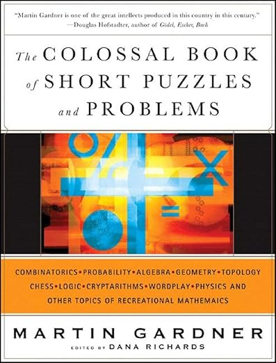

Things I've built.
Please note that many of these projects cannot be found online due to some server problems I'm experiencing.
A social reading platform originally an Android app, designed to connect readers based on their interests and provide personalized book recommendations through implemented recommendation systems.
A school project website that collects and shares science-related books and reading suggestions, created to help others discover and explore science through reading.
An app for managing 2FA codes: import from QR codes, modify them, OTP/HOTP, create 2FA codes, manual insertion, etc. It will soon be available on the App Store.
Small experiments and tools. Nothing serious.
A data structure that maps the internal contradictions of a belief system as an N × N × K tensor, where N is the number of beliefs and K indexes market regimes. Each cell T[i, j, k] holds a contradiction score in [0, 1] computed by a local NLI model with no API dependency. Scores are symmetric by construction: score(a, b) = (NLI(a→b) + NLI(b→a)) / 2. Context weights modulate scores per regime as T[i, j, k] = base × wk, allowing the same belief pair to carry different tension under crisis versus expansion. Core operations: max_contradiction() over any context slice; min_removal_set() as a greedy 2-approximation of Minimum Vertex Cover on the induced conflict graph; tension_clusters() via Union-Find over edges above a threshold.
A blind arbitrage detector for prediction markets. It decomposes cross-venue price discrepancies into exploitable hedging opportunities by calculating effective cost-per-payout under venue-specific fee regimes. The system computes the effective cost to guarantee $1 payout on each side, accounting for whether fees are charged upfront (taker structure: c = ask × (1 + r)) or deferred on profit (profit structure: c = ask / (1 − (1 − ask) × r)). When cYES + cNO < 1.0, a risk-free arbitrage exists. Optimal capital allocation scales inversely with cost to equalize payout across outcomes. Built on market-neutral hedging combined with fee structure asymmetry across platforms.
A news stream decomposition system grounded in StrADiff (arXiv:2604.04973). The news stream is treated as an observation channel: each article embedding y ∈ ℝd is modeled as a mixture of K unobserved causal forces, with the full corpus forming a matrix Y ∈ ℝN×d. StrADiff assigns each latent dimension its own reverse diffusion branch and an independent Gaussian process prior with a learned length-scale ℓₖ, producing a source activation matrix S ∈ ℝN×K. A shared MLP decoder gφ(S) reconstructs the observations, with the joint objective combining reconstruction, GP, diffusion, and KL terms end-to-end. An edge between two articles in the output graph carries a source-overlap weight derived from their rows in S; a high weight is the detectable signature of a shared upstream latent force, independent of surface topic. The pipeline runs on GitHub Actions every 12 hours: articles are fetched via NewsAPI.ai, embedded with all-MiniLM-L6-v2, decomposed by the source model, and written to a static data.json consumed by a React/Cytoscape.js frontend.
An AI system that uses Claude to create knowledge bubbles about the user and uses them to interact, creating a more personalized experience.
A transliteration and translation tool from Arabic that allows using the Arabizi alphabet.
I'm a first-year student, still learning how to write proper research papers. This section will be updated as I progress.
An essay synthesizing seven historical accounts of intelligence (Spearman, Gardner, Kahneman, Shannon, Chollet, Friston, Deutsch), examining what each perspective captures correctly. The paper proposes a unified synthesis: the Generative Model Revision account, defining intelligence as the capacity to build and efficiently revise compressed generative models of the world under uncertainty. Rather than attempting to resolve a century-old debate, this work aims to understand it with sufficient precision to identify where the genuine disagreements lie.
In this project, I developed an enhancement to the Boyer-Moore-Horspool algorithm specifically for natural language processing. My approach involves preprocessing the search pattern to identify the "anchor", its statistically least frequent character. During the search, the algorithm performs its first verification at this high-entropy position, allowing for a faster discard of non-matching windows. This implementation demonstrates how integrating linguistic statistics into classical pattern-matching can significantly improve performance without increasing the complexity of the shift heuristics.
Books I recommend.

I loved this book when I read it in high school. It doesn't require any particular mathematical knowledge, just curiosity and the willingness to think.
I'm studying Applied Mathematics at Politecnico di Milano and I'm part of Collegio di Milano.
I like building things and solving problems.
I'm also interested in football and cycling.